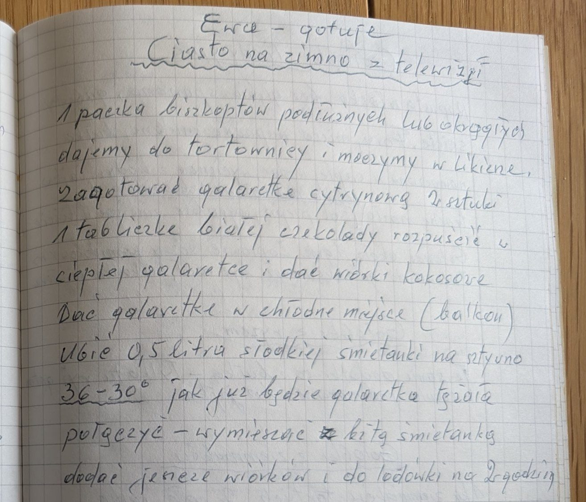

Ciasto na zimno z telewizji


Składniki
- 1 paczka biszkoptów (podłużnych lub okrągłych)
- likier
- 2 galaretki cytrynowe
- 1 tabliczka białej czekolady
- wiórki kokosowe
- 0,5 litra słodkiej śmietanki 30-36%
Przygotowanie
- Biszkopty ułożyć w tortownicy i nasączyć likierem.
- Zagotować 2 galaretki cytrynowe, rozpuścić w ciepłej galaretce białą czekoladę, dodać wiórki kokosowe.
- Galaretkę postawić w chłodnym miejscu.
- Ubić śmietankę na sztywno.
- Gdy galaretka zacznie tężeć, połączyć ją z bitą śmietanką.
- Dodać jeszcze wiórków, wyłożyć na biszkopty i wstawić do lodówki na 2 godziny.
Oryginalny zapis
Ewa – gotuje Ciasto na zimno z telewizji 1 paczka biszkoptów podłużnych lub okrągłych dajemy do tortownicy i moczymy w likierze. Zagotować galaretkę cytrynową 2 sztuki 1 tabliczkę białej czekolady rozpuścić w ciepłej galaretce i dać wiórki kokosowe Dać galaretkę w chłodne miejsce (balkon) Ubić 0,5 litra słodkiej śmietanki na sztywno 36-30° jak już będzie galaretka tężała połączyć – wymieszać z bitą śmietanką dodać jeszcze wiórków i do lodówki na 2 godziny